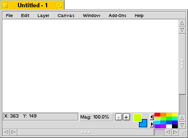
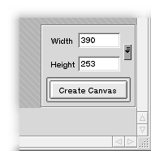
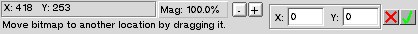
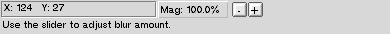
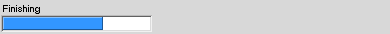
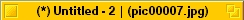

Paint-Window
The paint-window is the central part of the program where you create the images. It also contains a menu-bar for controlling operations such as saving the image and creating new windows. In figure 1 is a picture of a paint-window.
Figure 1: A paint-window.
| 
|
The paint-window is divided into three distinct subsections: the canvas, the status-bar and the menu-bar. In figure 1 the canvas is the white area in the middle of the window. It is used for painting the image. The status-bar is at the bottom of the window. It contains information such as coordinates and selected colors and allows you to also zoom the view and select new colors. The menu-bar can be used to invoke many operations, such as opening new windows and saving the image.
The canvas
The canvas is the area where you can paint your image. When a paint-window is first opened it does not have a canvas. You should select a suitable canvas size and then press the "Create Canvas"-button to create a canvas for the paint-window. Figure 2 shows the controls that are available for settings the size of the canvas.
Figure 2: Controls for settings the canvas size.
| 
|
The size can be selected by settings the numbers in the two fields or by selecting one of the recently used sizes from the pop-up-list on the right. If only an approximate size is needed, it can be quickly selected by dragging the window to the required size.
When the canvas has been created you can use any of the painting tools to paint on it. The painting tool can be used by pressing down the primary mouse-button. The secondary mouse-button brings up a pop-up-menu where you can change the active tool.
The status-bar
The status-bar is at the bottom of the window and it displays status-information about the current state of the program. Status-bar also contains tools for zooming the image and for selecting colors. Status-bar can be in several different states depending on the state of the program. The different states of the status-bar are listed here:
- Canvas not created -mode
- Normal-mode

- Transform-mode
- 
- Add-on-mode
- 
- Busy-mode
- 
The canvas not created -mode comes up when the window has no canvas. At this point the status-bar does not offer any functionality. This shows a message at the bottom of the bar. In most modes this place is reserved for helpful messages.
Normal-mode is the most usual, and it comes up when the canvas has been created. It has the following components (from left to right):
- Coordinates-box
- Displays the coordinates that the mouse is over. If the mouse is outside of the image this displays the width and height of the image instead.
- Magnification-box
- Displays the magnification-level of the image. When you click your mouse over this it brings up a slider with which the zooming level can be adjusted freely.
- Magnification-buttons
- Allow you to zoom in and out from the image in predefined steps.
- Selected colors
- Shows the current foreground- and background-color. Clicking on these with the primary mouse button opens up the color-window. Clicking with other mouse buttons exchanges the two colors with each other.
- Color-set
- Displays the current color-set. The two arrows change between different sets.
Transform-mode comes up when you start an image transformation such as rotation or translation. This mode may also come up with some add-ons. On the right side of the status-bar are two buttons for cancelling and applying the transformation. On their left side are control-views for controlling the transform.
Add-on mode is similar to normal-mode, but it does not display colors. The status-bar comes to this mode when you have started some add-on or for example when you are adjusting the transparency of the layer.
Busy-mode comes up when you have selected some operation that is going to take a substantial amount of time. Usually this goes by quite quickly, but depending on the speed of the computer and the size of the image, some operations might take a while. When the status-bar is in this mode you cannot do anything to that image (but you can edit other images if you wish).
The menu-bar
The menu-bar behaves like you would expect from a BeOS application. The following list summarizes the menu-items and describes their functionality.
File-menu
- Recent Images
- This has a list of recent images as a submenu. Look at the status-bar to see the path of the image your cursor is over.
- Open Image
- Brings up a file-panel for opening an image. The file-panel displays only directories and image-files.
- Save Image As
- Brings up a file-panel for saving the image. The file-panel contains a pop-up-menu for choosing the required save-format and also a button for bringing up a settings window for that format.
- Save Image
- Saves the image using the name and format that were used when it was last saved.
- New Project
- Opens a new, empty, paint-window.
- Recent Projects
- This has a list of recent projects as a submenu. Look at the status-bar to see the path of the project your cursor is over.
- Open Project
- Brings up a file-panel for opening a project from the disk.
- Save Project As
- Brings up a file-panel for saving the current project to the disk.
- Save Project
- Saves the project using the name (and path) it was last saved with.
- Close
- Closes the current window.
- Quit
- Closes all of the windows and quits the program.
Edit-menu
- Undo...
- Undoes the previous action. The name of this item will change according to what the previous action was.
- Redo...
- Redoes the action that was last undone. The name of this item will change to reflect what operation is to be redone.
- Cut
- This item has a submenu that allows you to cut the active layer or all layers. Cutting means that the layer (or all layers) is stored on the clipboard and then cleared. If you have made a selection only the selected area will be cut.
- Copy
- This is almost the same as cut, but this does not clear the layer (or the image).
- Paste As a New Layer
- Pastes the contents of the clipboard as a new layer.
- Paste As a New Project
- Pastes the contents of the clipboard as a new project. Opens a new window where the pasted image goes. Pasting does not empty the clipboard.
- Grow Selection
- Grows the size of the selection by one pixel in each direction.
- Shrink Selection
- Shrinks the size of the selection by one pixel from each direction.
- Invert Selection
- Inverts the selection by turning selected areas into unselected and unselected areas into selected.
- Clear Selection
- Clears the selection. This makes everything selected and it does not clear the actual image.
Layer-menu
- Rotate
- Starts rotating the currently active layer.
- Translate
- Starts translating the currently active layer.
- Flip Horizontally
- Flips the active layer horizontally
- Flip Vertically
- Flips the active layer vertically.
- Change Transparency
- Brings up a window where you can adjust the overall transparency of the active layer.
- Clear Layer
- Clears the layer to the background-color.
- Insert Text
- Brings up a window which allows you to insert text into the image.
- Show Layer Window
- Shows the layer-window.
- Add Layer
- Adds a new layer to the top of the image.
Canvas-menu
- Rotate
- Starts rotating the whole image.
- Translate
- Starts translating the whole image.
- Flip Horizontally
- Flips the whole image horizontally
- Flip Vertically
- Flips the whole image vertically.
- Crop
- Starts cropping the image. Opens up a new window where the crop amount can be adjusted. Crop also allows the extension of the image.
- Scale
- Starts scaling the image. Opens up a new window for setting the scaling parameters.
- Clear Canvas
- Clears the image to the background-color. This is same as clearing all of the layers separately.
Window-menu
- Zoom In
- Zooms in on the image.
- Zoom out
- Zooms out from the image.
- Set Zoom Level
- This has a submenu that contains a set of predefined zoom-levels that can be used to set the zooming of the image. Default value is 100%.
- Set Grid
- Contains a submenu of items that set the grid size. The grid restricts the drawing operations to certain steps. For example 8x8 restricts the drawing operations to 8 by 8 pixel blocks. Grid is useful for drawing diagrams and such things. Default value is off.
- Resize To Fit
- Resizes the window so that as much of the image is visible as possible while the window still fits on the screen.
- Show Palette Window
- Brings up the color-palette window that can be used to adjust colors and color-sets.
- Show Layer Window
- Brings up the layer window.
- Show Tool Window
- Brings up the window that can be used to select painting tools.
- Show Tool Setup Window
- Brings up the window that can be used to set up the painting tools.
- Show Brush Window
- Brings up the window that holds previously defined brushes.
- Settings
- Brings up the window where settings of the program can be adjusted.
Add-Ons-menu
The contents of this menu varies depending on what add-ons have been installed.
Help-menu
- User Manual
- Opens the ArtPaint documentation in a web-browser.
- Shortcuts
- Opens a page describing ArtPaint's keyboard shortcuts in a web-browser.
- About ArtPaint
- Opens a window that contains scrolling text that tells you about ArtPaint.
The title-bar
Every paint-window has a title-bar like most other windows. The title-bar is shown in the following figure.
Figure 1: The title-bar.
| 
|
The title-bar contains three pieces of information. The star on the left tells that the project has been changed since it was last saved. The 'Untitled - 2' is the name of the project, which in this case is still unnamed. When the project is saved to disk this will change to reflect that. The 'pic00007.jpg' is the name of the picture that this project was last saved to or loaded from.
|